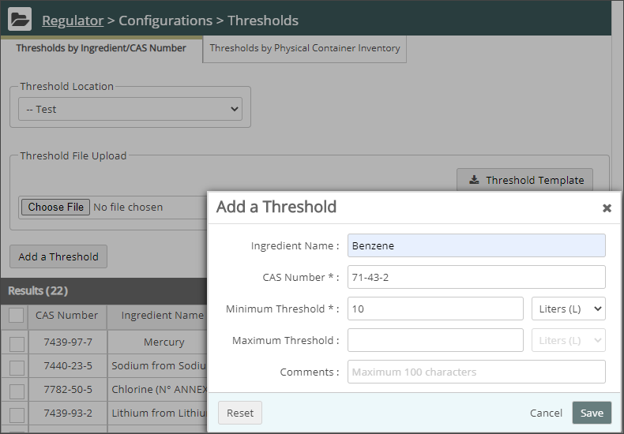

Click Regulator Main Menu ( ). The Regulator navigation pane displays. Select Thresholds from the Configurations list.
). The Regulator navigation pane displays. Select Thresholds from the Configurations list.
Click Add a Threshold.
The Add a Threshold window displays:

You can set inventory thresholds in Regulator. You can also upload a spreadsheet of thresholds using a spreadsheet template.
To add a threshold use one of two tabs:
Thresholds by Ingredient/Numbers: To add a threshold, you must specify a CAS number and up to two threshold values and units of measure.
Thresholds by Physical and Chemical Characteristics: To add a threshold, you must specify a unique identifier (ID number or Custom Field) and up to two threshold values and units of measure.
When the product inventory volume reaches the threshold value:
To add a threshold:
Click Regulator Main Menu (). The Regulator navigation pane displays. Select Thresholds from the Configurations list.
Click Add a Threshold.
The Add a Threshold window displays:

To upload a spreadsheet of thresholds:
Related Topics: